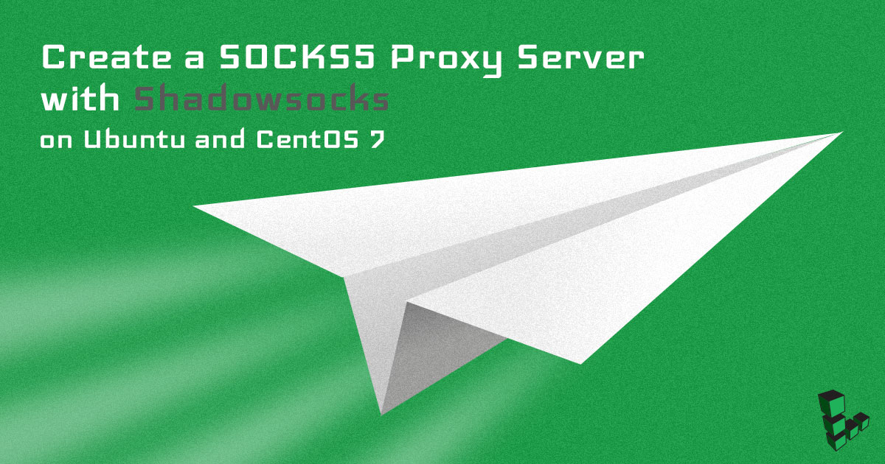
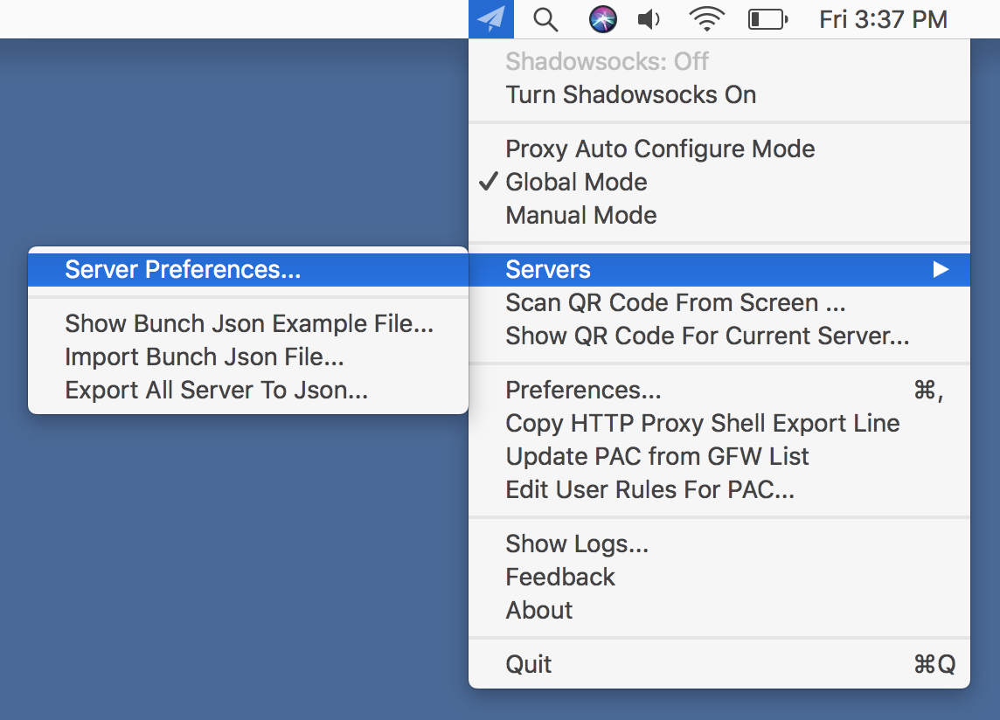
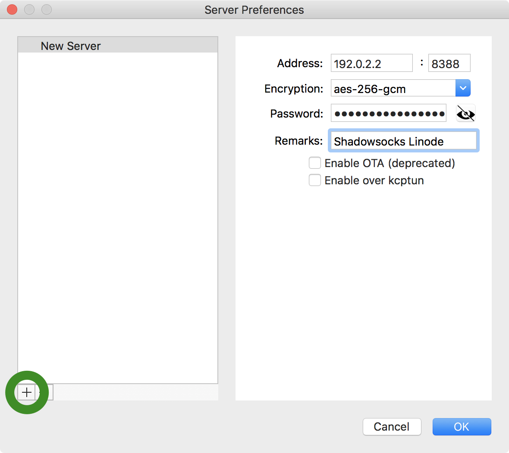
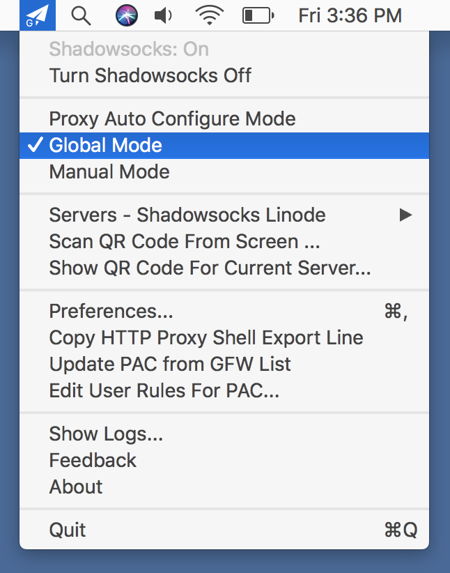
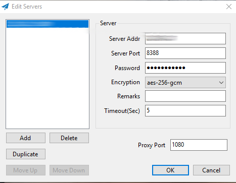

Create a SOCKS5 Proxy Server with Shadowsocks on Ubuntu and CentOS 7
Updated by Linode Contributed by Andrew Lescher

Shadowsocks is a lightweight SOCKS5 web proxy tool primarily utilized to bypass network censorship and blocking on certain websites and web protocols. A full setup requires a Linode server to host the Shadowsocks daemon, and a client installed on PC, Mac, Linux, or a mobile device. Unlike other proxy software, Shadowsocks traffic is designed to be both indiscernible from other traffic to third-party monitoring tools, and also able to disguise itself as a normal direct connection. Data passing through Shadowsocks is encrypted for additional security and privacy.
Since there is currently no Shadowsocks package available for Ubuntu or CentOS, this guide shows how to build Shadowsocks from source.
Before You Begin
The commands in this guide require root privileges. To run the steps as an elevated user with sudo privileges, prepend each command with
sudo. If two commands are presented in the same instance (separated by&&), remember to usesudoafter the&&(ex.sudo [command] && sudo [command]). To create a standard user account withsudoprivileges, complete the Add a Limited User Account section of our Securing your Server guide.A working firewall is a necessary security measure. Firewall instructions will be presented for UFW, FirewallD, and Iptables. To configure a firewall on your Linode, visit one of our guides:
Install the Shadowsocks Server
Download Source Code and Dependencies
Update system repositories, then download and install dependencies:
Ubuntu 16.04
apt update && apt upgrade -yuf apt install -y --no-install-recommends gettext build-essential autoconf libtool libpcre3-dev \ asciidoc xmlto libev-dev libudns-dev automake libmbedtls-dev \ libsodium-dev git python-m2crypto libc-ares-devCentOS 7
yum update && yum upgrade -y yum install epel-release -y yum install -y gcc gettext autoconf libtool automake make pcre-devel asciidoc xmlto udns-devel \ libev-devel libsodium-devel mbedtls-devel git m2crypto c-ares-develNavigate to the
/optdirectory and download the Shadowsocks Git module:cd /opt git clone https://github.com/shadowsocks/shadowsocks-libev.git cd shadowsocks-libev git submodule update --init --recursiveInstall Shadowsocks-libev:
./autogen.sh ./configure make && make install
Configure the Shadowsocks Server
Create a new system user for Shadowsocks:
Ubuntu 16.04
adduser --system --no-create-home --group shadowsocksCentOS 7
adduser --system --no-create-home -s /bin/false shadowsocksCreate a new directory for the configuration file:
mkdir -m 755 /etc/shadowsocksCreate the Shadowsocks config file at
/etc/shadowsocks/shadowsocks.json. Paste the contents listed below into the file, noting the instructions in the shadowsocks.json Breakdown table for each property. Follow these instructions to determine the value you should set for each property.- /etc/shadowsocks/shadowsocks.json
-
1 2 3 4 5 6 7 8{ "server":"your_public_IP_address", "server_port":8388, "password":"your_password", "timeout":300, "method":"aes-256-gcm", "fast_open": true }
shadowsocks.json Breakdown
| Property | Explanation | Possible Values |
|---|---|---|
| server | Enter your server’s public IP address. | User determined |
| server_port | Shadowsocks will listen on this port. Use the default value of 8388. |
User determined |
| password | Connection password. Set a strong password. | User determined |
| timeout | Connection timeout in seconds. The default value should be sufficient here. | User determined |
| method | Encryption method. Using AEAD algorithms is recommended. | See Stream Ciphers and AEAD Ciphers |
| fast_open | Reduces latency when turned on. Can only be used with kernel versions 3.7.1 or higher. Check your kernel version with uname -r. |
true, false |
| nameserver | Name servers for internal DNS resolver. | User determined |
Optimize Shadowsocks
Apply the following optimizations to your system kernel to provide for a smooth running Shadowsocks installation.
Create the
/etc/sysctl.d/local.confsystem optimization file and paste the contents shown below into your file:Caution
These settings provide the optimal kernel configuration for Shadowsocks. If you have previously configured your system kernel settings for any reason, make sure no conflicts exist.- /etc/sysctl.d/local.conf
-
1 2 3 4 5 6 7 8 9 10 11 12 13 14 15 16 17 18 19 20 21 22 23 24 25 26 27 28 29 30 31 32 33 34 35 36 37 38 39 40 41 42# max open files fs.file-max = 51200 # max read buffer net.core.rmem_max = 67108864 # max write buffer net.core.wmem_max = 67108864 # default read buffer net.core.rmem_default = 65536 # default write buffer net.core.wmem_default = 65536 # max processor input queue net.core.netdev_max_backlog = 4096 # max backlog net.core.somaxconn = 4096 # resist SYN flood attacks net.ipv4.tcp_syncookies = 1 # reuse timewait sockets when safe net.ipv4.tcp_tw_reuse = 1 # turn off fast timewait sockets recycling net.ipv4.tcp_tw_recycle = 0 # short FIN timeout net.ipv4.tcp_fin_timeout = 30 # short keepalive time net.ipv4.tcp_keepalive_time = 1200 # outbound port range net.ipv4.ip_local_port_range = 10000 65000 # max SYN backlog net.ipv4.tcp_max_syn_backlog = 4096 # max timewait sockets held by system simultaneously net.ipv4.tcp_max_tw_buckets = 5000 # turn on TCP Fast Open on both client and server side net.ipv4.tcp_fastopen = 3 # TCP receive buffer net.ipv4.tcp_rmem = 4096 87380 67108864 # TCP write buffer net.ipv4.tcp_wmem = 4096 65536 67108864 # turn on path MTU discovery net.ipv4.tcp_mtu_probing = 1 # for high-latency network net.ipv4.tcp_congestion_control = hybla # for low-latency network, use cubic instead net.ipv4.tcp_congestion_control = cubic
Apply optimizations:
sysctl --system
Create a Shadowsocks Systemd Service
The Shadowsocks systemd service allows the daemon to automatically start on system boot and run in the background.
Create a systemd file with the following content:
- /etc/systemd/system/shadowsocks.service
-
1 2 3 4 5 6 7 8 9 10 11 12[Unit] Description=Shadowsocks proxy server [Service] User=root Group=root Type=simple ExecStart=/usr/local/bin/ss-server -c /etc/shadowsocks/shadowsocks.json -a shadowsocks -v start ExecStop=/usr/local/bin/ss-server -c /etc/shadowsocks/shadowsocks.json -a shadowsocks -v stop [Install] WantedBy=multi-user.target
Enable and start
shadowsocks.service:systemctl daemon-reload systemctl enable shadowsocks systemctl start shadowsocks
Open Firewall Port for Shadowsocks Client
Depending on your preference, you may use either the iptables, UFW, or firewalld (CentOS 7 only) commands to complete this section.
Open port 8388 for the Shadowsocks Client:
Iptables
iptables -4 -A INPUT -p tcp --dport 8388 -m comment --comment "Shadowsocks server listen port" -j ACCEPT
UFW
ufw allow proto tcp to 0.0.0.0/0 port 8388 comment "Shadowsocks server listen port"
FirewallD
firewall-cmd --permanent --zone=public --add-rich-rule='
rule family="ipv4"
port protocol="tcp" port="8388" accept'
firewall-cmd --reload
Install a Shadowsocks Client
The second stage to a Shadowsocks setup is to install a client on the user’s device. This could include a computer, mobile device, tablet, and even home network router. Supported operating systems include Windows, macOS, iOS, Linux, Android, and OpenWRT.
macOS Shadowsocks Client
Download the ShadowsocksX-NG GUI Client for macOS:
Launch the application on your Mac. The app preferences will be available from a new status menu bar icon. Select the Server Preferences menu item:

In the Server Preferences window, click on the + (plus-sign) button in the lower left. Enter the details for your Shadowsocks Linode. Be sure to select the same port and encryption scheme that you listed in your Linode’s
shadowsocks.jsonfile. Afterwards, close the window:
In the Shadowsocks menu, make sure that Shadowsocks is turned on and that the Global Mode item is selected:

Verify that your Shadowsocks connection is active by visiting an IP address lookup website like ifconfig.co. When your connection is working as expected, the website will list your Shadowsocks Linode’s public IP.
Windows Shadowsocks Client
Navigate to the Windows Shadowsocks page. Click on Shadowsocks-4.0.4.zip under Downloads.
Extract the contents of the .zip file into any folder and run
Shadowsocks.exe. Shadowsocks will run as a background process. Locate the Shadowsocks icon in the taskbar (it may be in the Hidden Icons taskbar menu), right-click on the Shadowsocks icon, then click on Edit Servers. Enter the information that you saved in theshadowsocks.jsonfile:
Right-click on the Shadowsocks icon again. Mouse over PAC and select both Local PAC and Secure Local PAC.
To confirm that your Linode’s IP address is selected, mouse over Servers.
Verify that your Shadowsocks connection is active by visiting an IP address lookup website like ifconfig.co. When your connection is working as expected, the website will list your Shadowsocks Linode’s public IP.
Where to Go from Here
Once your Shadowsocks server is online, configure a client on your mobile phone, tablet, or any other devices you use. The Shadowsocks client download page supports all mainstream platforms.
More Information
You may wish to consult the following resources for additional information on this topic. While these are provided in the hope that they will be useful, please note that we cannot vouch for the accuracy or timeliness of externally hosted materials.
Join our Community
Find answers, ask questions, and help others.
This guide is published under a CC BY-ND 4.0 license.